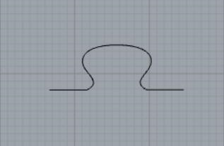
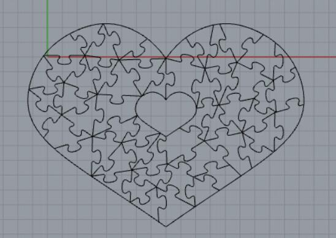
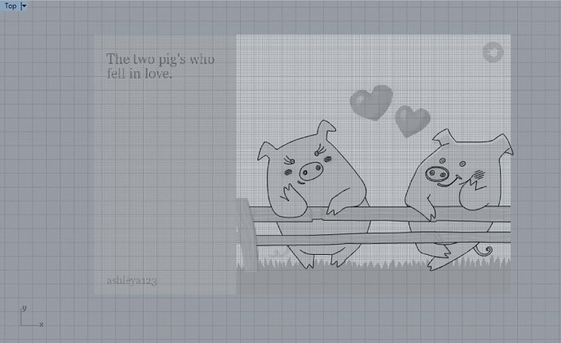
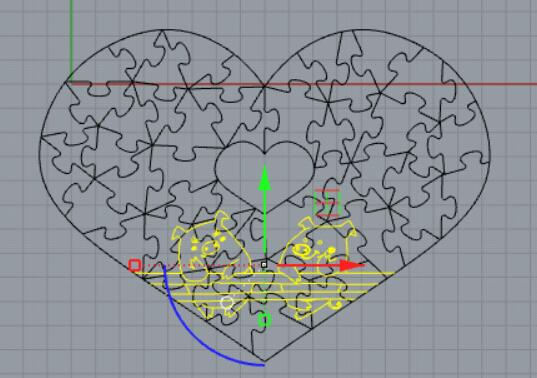
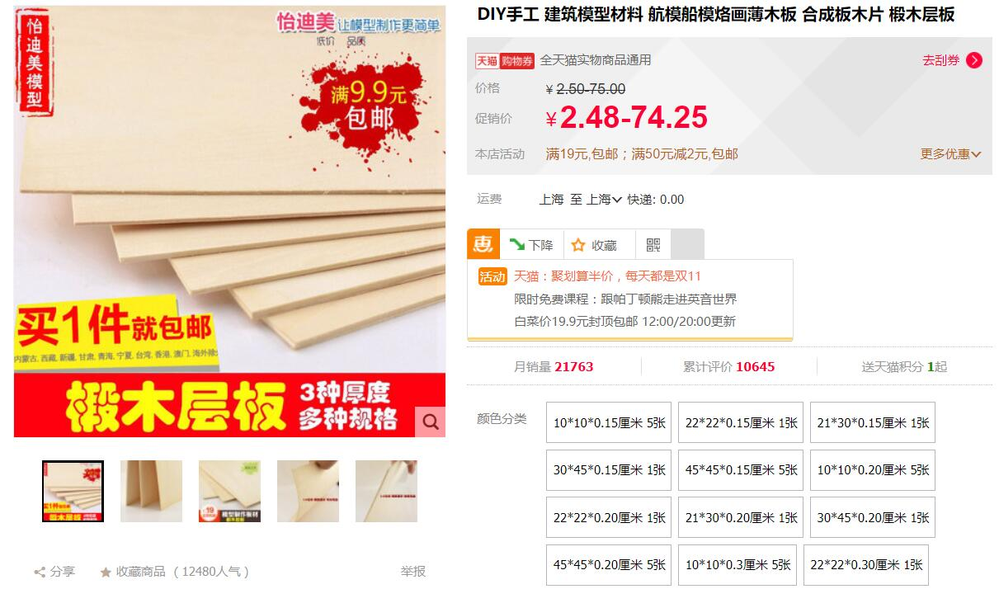
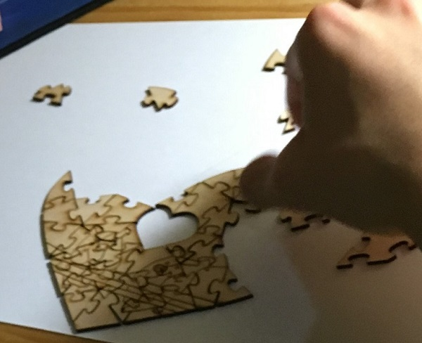
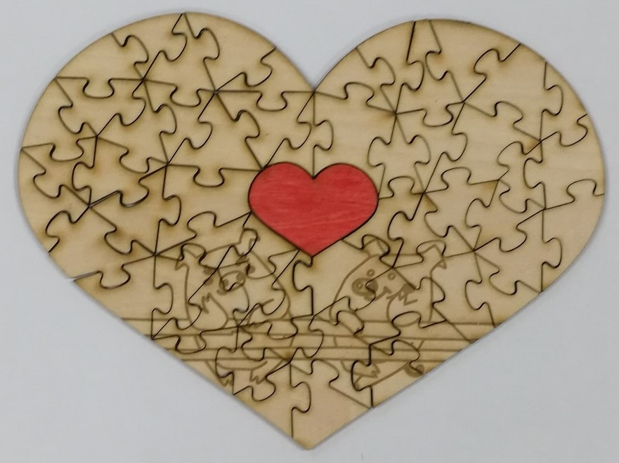

Birthday gift for my beloved one
Jigsaw Puzzle
I was thinking so hard and finally came up with a special birthday gift that could be unique and memorable: Self-made Jigsaw Puzzle!
First, I made the single jigsaw in the Rhinocero5 as shown below. Then I copied it and rotated them. You might think it's simple but in fact it was a lot of work.
I translated the rough picture of the jigsaw puzzle in my mind into a design draft in rhinocero. Since he's very smart and might solve my puzzle in minutes, I intended to increase the difficulty level exponentially by creating irrgular pieces of jigsaw puzzle. But it also largely increased the time I spent on this design. The whole procedure took me 5 hours.
Our zodiac are both pig. So I downloaded a picture of two pigs online and inserted in Rhinocero5 as Background Bitmap. I outlined the pigs, then scaled and moved the pigs into the puzzle I made. I drew some additional lines to connect some broken part to make it looks like a perfect fit.

The board in the Fablab is too thick. I bought this wooden board on TAOBAO with 2mm thickness.
After error and trials, I finally lasercutted the board and collected all the pieces. Mr. Wu helped a lot! he helped to test the difficulty of the puzzle and the answer is too too difficult without guiding pictures or pattern on the pieces. Well, but I'm too lazy to make another one.
Hahaha, he's working on the jigsaw puzzle. He spent a long long long time in putting them together. Poor guy.
Done!
Lovely! It indeed looks pretty good! The raster of pigs are blurred by the curves of jigsaws though. He kept it intact until now.
